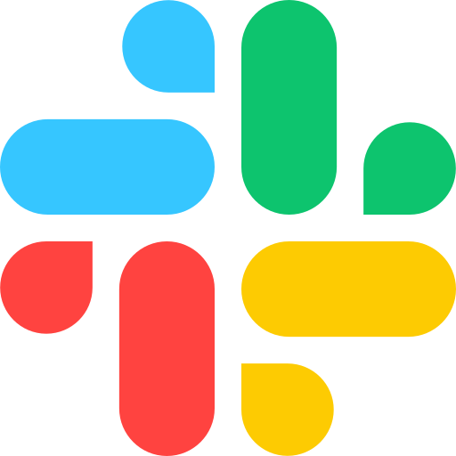

2. Làm quen với Claude
/
Claude Cowork
Giới thiệu
Claude Cowork là không gian làm việc cộng tác cho phép nhiều thành viên trong một nhóm/tổ chức
cùng sử dụng Claude trên một ngữ cảnh (context) và tri thức dùng chung, thay vì mỗi người mở một cuộc chat riêng
lẻ. Thay vì "hỏi–đáp một mình" như Claude Chat thông thường, Claude Cowork tập trung vào việc chia sẻ prompt,
tài liệu, kết quả và lịch sử trao đổi giữa các thành viên, đồng thời kết nối trực tiếp với các công cụ làm việc
nhóm mà tổ chức đang dùng (Slack, Google Drive, Jira, SharePoint...) để Claude có thể tham chiếu đúng dữ liệu
của team khi trả lời.
Các tính năng chính
- Không gian làm việc dùng chung (Shared Workspace): nhiều thành viên cùng truy cập một Project, cùng một bộ tài liệu/ngữ cảnh nền tảng.
- Cộng tác theo thời gian thực: nhiều người có thể xem, tiếp tục hoặc góp ý vào cùng một cuộc hội thoại/kết quả thay vì làm riêng lẻ.
- Tích hợp công cụ doanh nghiệp: kết nối Slack, Google Drive, Jira, SharePoint, CRM... để Claude lấy dữ liệu thật của team làm ngữ cảnh trả lời.
- Phân quyền theo vai trò: quản trị viên kiểm soát ai được truy cập Workspace nào, dữ liệu nào được chia sẻ.
- Lưu trữ tri thức nhóm: lịch sử trao đổi, tài liệu, quy trình được giữ lại làm nguồn tham chiếu chung, giảm việc lặp lại ngữ cảnh mỗi khi có người mới hỏi.
Mô hình kiến trúc
flowchart LR
U1["
 Thành viên A
Thành viên A"]
U2["
 Thành viên B
Thành viên B"]
CW["
 Claude Cowork
Claude CoworkWorkspace dùng chung"]
Slack["

Slack"]
Drive["
 Drive / SharePoint
Drive / SharePoint"]
Jira["
 Jira
Jira"]
Git["
 GitHub
GitHub"]
U1 -->|"Trao đổi, chia sẻ prompt"| CW
U2 -->|"Xem lại, tiếp tục hội thoại"| CW
CW -->|"Đọc dữ liệu, gửi thông báo"| Slack
CW -->|"Tham chiếu tài liệu"| Drive
CW -->|"Cập nhật ticket"| Jira
CW -->|"Đọc code, tạo PR"| Git
Claude Cowork đóng vai trò không gian trung tâm: nhiều thành viên cùng chia sẻ một ngữ cảnh làm việc, trong khi Claude kết nối tới các hệ thống doanh nghiệp để lấy/đẩy dữ liệu thật thay vì trả lời chỉ dựa trên thông tin người dùng gõ vào.
So sánh Claude Chat, Claude Cowork và Claude Code (CLI)
| Tiêu chí | Claude Chat | Claude Cowork | Claude Code (CLI) |
|---|
| Đối tượng sử dụng | Cá nhân | Nhóm/tổ chức | Developer |
| Khả năng thực thi code | Chỉ chạy được trong sandbox tạm thời để xem trước Artifact, không tác động ra ngoài | Tương tự Claude Chat — hỗ trợ xem trước/chạy thử trong Workspace, không chỉnh sửa trực tiếp lên hệ thống của team | Thực thi trực tiếp trên máy/repository thật: chạy build, test, sửa file, commit |
| Ngữ cảnh làm việc | Riêng của từng cuộc chat | Dùng chung cho cả team (Workspace) | Riêng theo từng project/repository |
| Cộng tác nhiều người | Không, mỗi người một cuộc chat riêng | Có, nhiều người cùng xem/tiếp tục một hội thoại | Không, chạy độc lập theo máy/terminal của từng developer |
| Tích hợp công cụ ngoài | Hạn chế (chủ yếu qua Connector cá nhân) | Kết nối sâu với công cụ doanh nghiệp: Slack, Drive, Jira, SharePoint | Kết nối với filesystem, Git/GitHub, MCP server |
| Kết quả đầu ra chính | Văn bản, Artifacts (tài liệu, giao diện demo) | Tài liệu/kết quả dùng chung, cập nhật trạng thái công việc nhóm | Thay đổi trực tiếp trên code, commit, Pull Request |
| Nơi sử dụng | Trình duyệt / ứng dụng desktop | Trình duyệt / ứng dụng desktop (không gian Workspace riêng) | Terminal, tích hợp trong IDE |
Use Cases
Viết tài liệu nhóm
Nhiều thành viên cùng soạn thảo, góp ý một tài liệu (kế hoạch dự án, quy trình nội bộ) dựa trên cùng một ngữ cảnh Claude đã nắm được.
Tổng hợp thông tin từ nhiều nguồn
Claude Cowork tham chiếu dữ liệu từ Slack, Drive, Jira để trả lời câu hỏi dựa trên tình trạng thực tế của công việc nhóm, không cần copy-paste thủ công.
Bàn giao và tiếp nối công việc
Thành viên mới hoặc người thay ca có thể xem lại toàn bộ lịch sử trao đổi trong Workspace để tiếp tục công việc mà không mất ngữ cảnh.
Hỗ trợ khách hàng theo nhóm
Team support cùng xử lý một ticket, Claude tổng hợp thông tin từ CRM/ServiceNow để đề xuất câu trả lời nhất quán giữa các thành viên.
Thông tin bổ sung
Vì Claude Cowork kết nối tới nhiều hệ thống doanh nghiệp và cho phép nhiều người cùng truy cập một Workspace,
tổ chức cần thiết lập phân quyền rõ ràng (ai được xem Workspace nào, dữ liệu nào được đồng bộ) để tránh rò rỉ
thông tin nội bộ. Nên giới hạn số lượng tích hợp ở mức cần thiết cho từng team thay vì bật toàn bộ connector,
vừa giảm nguy cơ bảo mật vừa giảm chi phí xử lý ngữ cảnh khi Claude phải tham chiếu quá nhiều nguồn dữ liệu
trong mỗi câu trả lời.